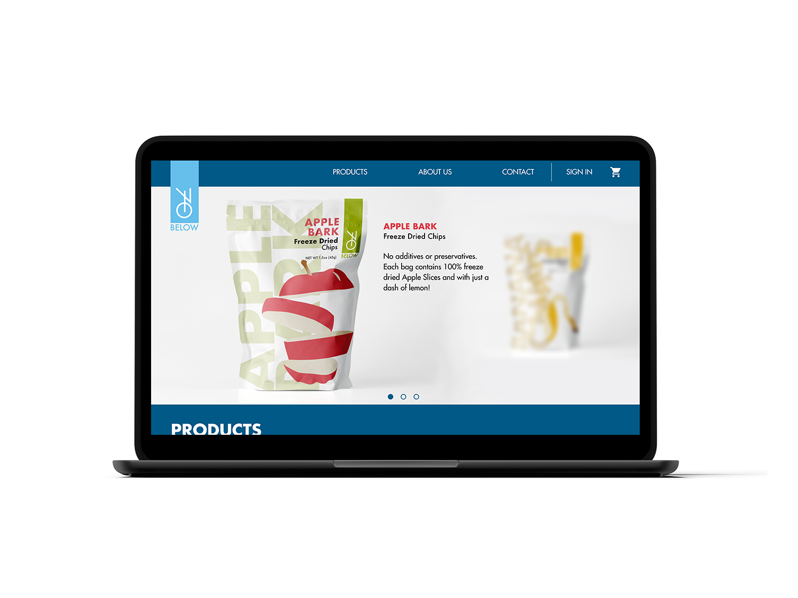
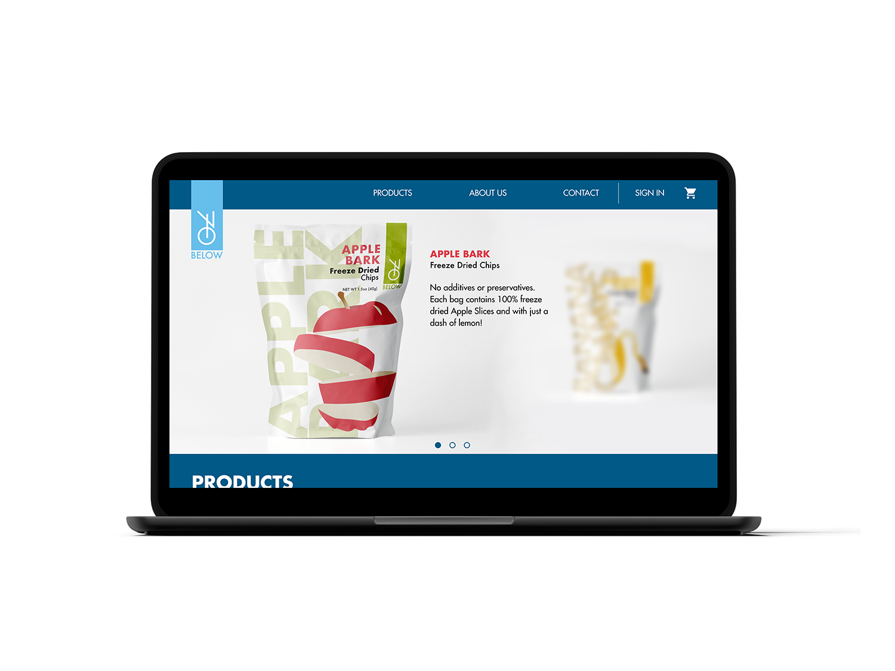

70 BELOW
The objective of this project was to re-design a graphic packaging design for 70 Below, during the design Aton held by the Niagara college Graphic Design program.Read more
YEAR
2020
CLIENT
70 Below [design aton]
WHAT I DID
Brand Identity
Illustrations
Packaging Design
Web Design
 

70 BELOW
70 below is a company that makes and sells; healthy freeze-dried snacks and pet treat that are Ontario grown. The objective of this project was to re-design a graphic packaging design for 70 Below, during the design Aton held by the Niagara college Graphic Design program. The goal was to work in pairs to create a rebrand for 70 below in one day.
The target audience for 70 Below is youth and adults that are looking for healthy snack alternatives.
Design challenges relating to the rebranding of 70 Below, would be the time span in which we had to complete the brand identity.
To design the brand identity for 70 Below, with all of the design elements that are involved and necessary to create the visual identity, a few pieces of software were used; Adobe Illustrator, Photoshop, and Figma.
The outcome of the project was a success. The goal of rebranding 70 Below was reached by the end of the event. The colour choice was based on the product being sold. The logo has a modern and clean style, making it look current and established. The typeface choice was based on a modern and simplistic style, to match the other design choices and elements. All of the design choices and strategies were made to accomplish a simple and modern visual identity.


About.me
Brazilian Graphic Designer currently based in Orangeville, ON, Canada. Focused on Visual Identity, Packaging and Editorial Design, but always looking forward to a challenge in different design fields. Read more

70 BELOW
The objective of this project was to re-design a graphic packaging design for 70 Below, during the design Aton held by the Niagara college Graphic Design program.Read more
YEAR
2020
CLIENT
70 Below [design aton]
WHAT I DID
Brand Identity
Illustrations
Packaging Design
Web Design